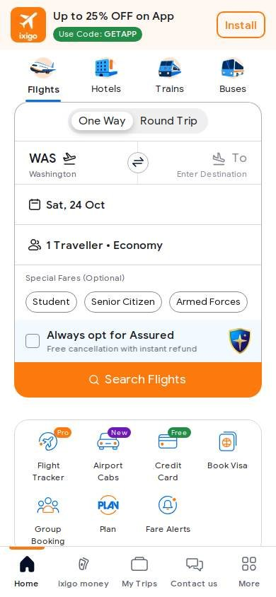
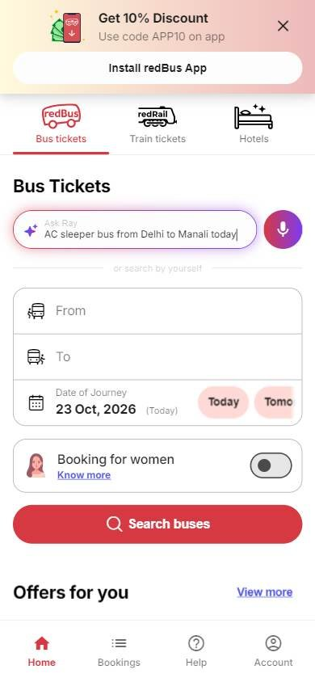

India
Cambiar consultaTurismo y reservas
Los seleccionados
Los tres sitios más visitados de India, según estadísticas de tráfico.
En resumen: lo que hacen los líderes
Estilo visualPaletas acotadas con un color de marca fuerte y botones en píldora.HeaderLos servicios (vuelos, trenes, buses, hoteles) se eligen con pestañas con íconos arriba del buscador.Primera pantallaBuscador protagonista dentro de una tarjeta blanca, con un botón de color fuerte en forma de píldora.
La pantalla de inicio de cada uno


Foto en camino
Estilo visual
Colores, imágenes, tipografía y cuánta información muestran.
Recomendación
Tu estilo visual debería…
- Un color de marca fuerte para el botón de búsqueda, en forma de píldora.
Lo que tienen en común: Paletas acotadas con un color de marca fuerte y botones en píldora.
La paleta de cada uno
Medida sobre la primera pantalla. Los colores de marca salen del header; el resto muestra cuánto espacio ocupa cada color.
ixigo
Colores de marcaSin color: blanco y negro
81 % de la pantalla en blanco, gris o negroredBus
Colores de marca
66 % de la pantalla en blanco, gris o negroMakeMyTrip
Colores de marca
81 % de la pantalla en blanco, gris o negroAsí lo resuelve cada uno
Ficha comparativa
| Aspecto | ixigo | redBus | MakeMyTrip |
|---|---|---|---|
| Paleta | Variada: naranja, rojo, azul | Acotada: rojo + blanco | Acotada: azul + blanco + foto |
| Imágenes | Banners de promo | Ilustración del bus | Foto grande de paisaje |
| Botones | Naranja | Rojo en píldora | Azul en píldora |
Header
La franja de arriba con el logo y los accesos.
Recomendación
Tu header debería…
- Pestañas con ícono para cada tipo de viaje, arriba del buscador.
Lo que tienen en común: Los servicios (vuelos, trenes, buses, hoteles) se eligen con pestañas con íconos arriba del buscador.
Así lo resuelve cada uno
Ficha comparativa
| Aspecto | ixigo | redBus | MakeMyTrip |
|---|---|---|---|
| Fondo | Blanco | Blanco con franja de promo arriba | Transparente sobre foto |
| Pestañas de servicio | Vuelos, hoteles, trenes, buses (con íconos) | Buses, trenes, hoteles (con íconos) | Vuelos, hoteles (con íconos) dentro del buscador |
| A la derecha | Ofertas, atención, ingresar | Reservas, ayuda, cuenta | Moneda, idioma, «Iniciar sesión» |
Primera pantalla
Lo primero que se ve debajo del header.
Recomendación
Tu primera pantalla debería…
- Buscador en tarjeta blanca sobre foto o color, con botón en píldora.
- Atajos de fecha («Hoy», «Mañana») si vendés viajes cortos.
Lo que tienen en común: Buscador protagonista dentro de una tarjeta blanca, con un botón de color fuerte en forma de píldora.
Así lo resuelve cada uno
Ficha comparativa
| Aspecto | ixigo | redBus | MakeMyTrip |
|---|---|---|---|
| Formato | Buscador + promos | Banner de color + buscador encima | Foto de paisaje + buscador en tarjeta blanca |
| Botón | Naranja «Search» | Rojo en píldora «Search buses» | Azul en píldora «Buscar» |
| Atajos | — | «Today» y «Tomorrow» | — |